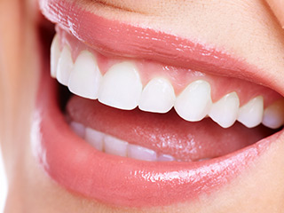
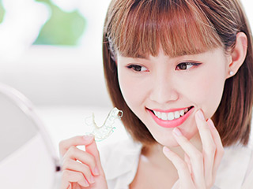

- ホーム
- 審美治療｜メリット・デメリット
Merit審美治療の知識を深めましょう～メリット・デメリット～

虫歯治療の方法は大きく分けて2種類あります。それは保険診療と保険外診療（自費診療）です。保険診療で治療すると、比較的安価に比較的短期間で治療できますが、残念ながら自然な美しさはあまり期待できません。その反面、自費診療は機能性と美しさの回復の両方に重点を置くので、銀歯を使う保険診療のデメリットを解消できます。
どちらの診療が合うのかは患者様によって異なりますので、まずはそれぞれの治療のメリットとデメリットを知ってください。そのうえで治療を選択することが大切です。
銀歯で心配なこと
歯科では全国どこでも同じ保険診療が受けられます。治療費用を一部負担するだけでいいので比較的手ごろな金額で、比較的かんたんに機能回復ができますが、長期的な使用を考えたときのさまざまなデメリットが心配です。
目立ってしまう
天然歯は白くて透明感がありますが、虫歯治療で装着する銀歯は、黒ずんで見えて口を開けたときに目立ってしまいます。
歯ぐきが黒ずむ
経年により金属の成分がイオン化して溶け出し、歯ぐきに付着すると黒ずんでしまうことがあります。
虫歯になりやすい
銀歯は歯科用セメントで歯に装着しますが、経年とともにセメントが溶け出しすき間ができることがあります。そこから汚れが入り込むと、歯の中で虫歯が再発するリスクが高まります。
金属アレルギーの心配がある
金属がイオン化して溶け出し、粘膜から体内に取り込まれると、金属アレルギーを引き起こすことがあります。原因不明の皮膚のかぶれやかゆみ、頭痛や倦怠感などの不定愁訴（ふていしゅうそ）はお口の中の銀歯が原因かもしれません。
セラミック治療のメリット
メリット1 見た目が自然で美しい

セラミックを使えば、天然歯に似た光の透過性や色調の再現が可能です。白い歯といっても1色ではありません。1本の歯でも歯ぐき付近から先端に向かってグラデーションがあり、さらに先端は透明感が高めです。セラミックを使えば、天然歯と見分けがつかないように仕上げられます。
メリット2 劣化しにくく長期的に使用可能
保険診療でつくる前歯の被せ物は金属とプラスチックでできているので、経年により変色しますが、セラミックはほとんど変色せず、劣化の心配もありません。噛み合わせに問題がなければ、ずっと使用できます。
メリット3 虫歯になりにくく歯ぐきへの負担も少ない0
セラミックの表面はなめらかで汚れがつきにくく、プラーク（歯垢）が付着しにくいために虫歯や歯周病の発症リスクを低く抑えられます。金属を使用しないので、歯ぐきが黒ずんでしまうこともありません。
メリット4 コンプレックスの解消
銀歯が入っていると口を開けたときに目立つので、笑顔をためらってしまう方がいらっしゃいます。セラミックを使った美しい歯を手に入れれば、口元のコンプレックスがなくなり、笑顔に自信を取り戻せます。
メリット5 金属アレルギーの心配がない
セラミックは生体親和性が高く、お口の中で安定します。金属を使用しないでセラミック素材だけで人工歯をつくると、金属アレルギーの心配がありません。
メリット6 金属より軽く負担が少ない
数本の虫歯の治療に金属を使うと、かなりの重さになり、お顔の左右バランスがくずれてしまうことがあります。しかしセラミックの一種のジルコニアは金属の重さの3分の1程度なので負担を抑えられます。
セラミック治療のデメリット
- 自費診療なので費用を全額負担するため、1回に支払う金額が比較的高額
- 強度が高いので噛み合う歯を傷めることがある
- 歯を削る量が比較的多めになってしまう
- 強い衝撃が加わると割れたり、欠けたりするリスクがある